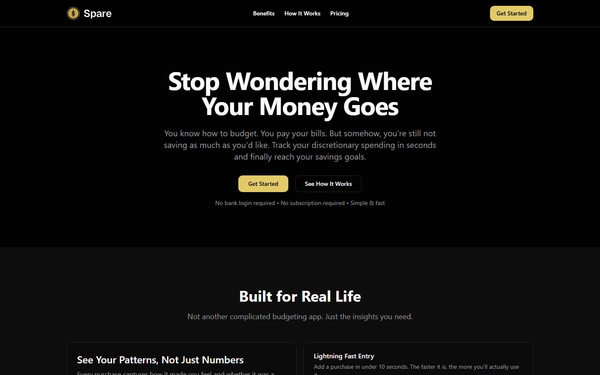

Spare.
A tracker for the money left over after bills and savings. You type in each purchase, and Spare shows where that money actually goes.

Who it’s for.
Someone who already knows how to budget. They pay their bills on time, they aren’t in trouble, they just can’t account for where the leftover money goes. They don’t need a lesson, they need to see the number.
The main use is standing at a counter, phone in hand, logging what you just bought. Reviewing the month and adjusting the goal happen later and less often.
We were planning to buy a house and I had the numbers in an Excel workbook. I wanted something my wife and I could both use from our phones instead of a spreadsheet only one of us understood.
Why there’s no bank sync.
Spare has no bank connection and I don’t plan to add one. Typing the purchase in is the part that makes you notice it. Import would skip that. Each purchase also records whether it was a want or a need and how it felt, because spotting patterns in that is the whole point.
Setup is income after tax, bills (one figure or itemised) and a savings goal. The discretionary budget is income − bills − savings goal. Day to day you add purchases: amount, category, want or need, a note, the date. Then there’s a dashboard, category breakdown, trends, a calendar and a ledger for the month, plus recurring charges for the things that come back.
Next.js App Router, Supabase for auth and Postgres with row-level security per user, shadcn/ui on Tailwind, Recharts for the charts, and Stripe for a free tier and a $1.99/month Pro. It ships a web manifest so it can sit on an iPhone home screen. It’s designed for the phone first; desktop works but is second.
Lessons.
- Leaving out bank sync is what makes the app work. Sometimes the missing feature is the product.
- Purchase dates are plain
YYYY-MM-DDstrings, never aDate. Timezones only cause problems when the question is what you bought on Tuesday. - Possibly a different component library. shadcn/ui is fine, but I would try something else next time.
Try it.
Free tier: 50 purchases a month, 5 categories, 3 months of history. Pro unlocks the rest.